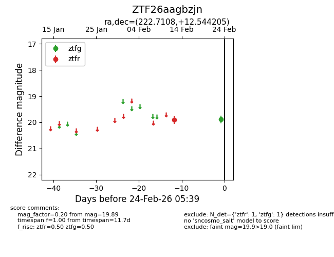
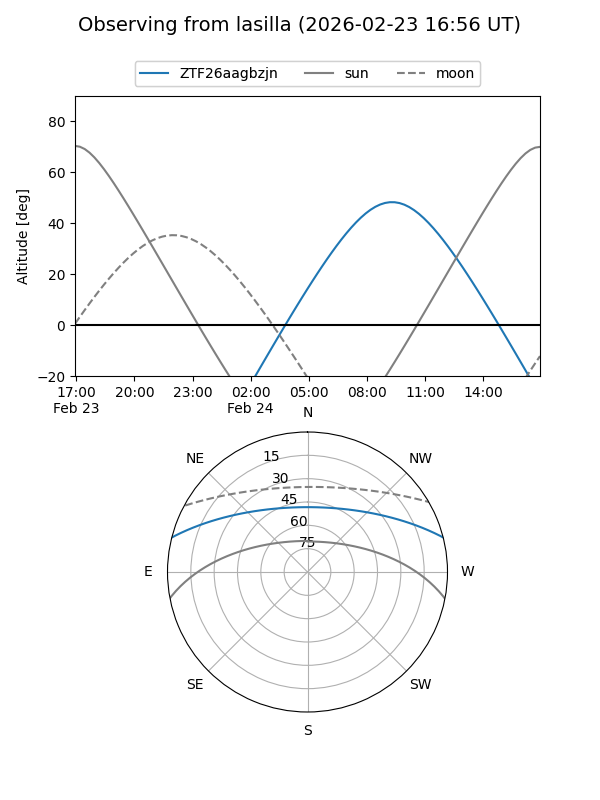
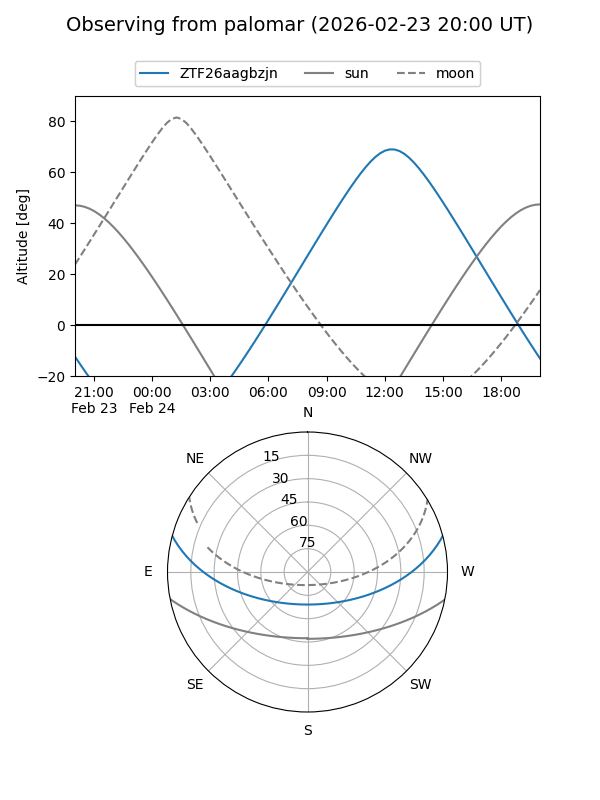

ZTF26aagbzjn
Target ZTF26aagbzjn at 2026-02-24 09:08
Aliases and brokers:
FINK: link
Lasair: link
ALeRCE: link
alt names
ZTF26aagbzjn (ztf,fink_ztf)
Coordinates:
equatorial (ra, dec) = 222.7108,+12.54420
equatorial (HMS+DMS) = 14:50:50.59,+12:32:39.14
galactic (l, b) = (11.2937,+58.48624)
Flags:
Photometry:
last ztfg=19.89, ztfr=19.90
1 ztfg, 1 ztfr detections
Lightcurve

Visibility


Additional plots